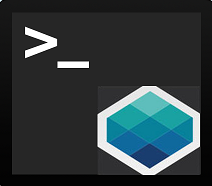

One Command to command whole Onap !!
Provides unified commands to operate ONAP from Linux console and Web console.
Please download ONAP CLI here
To open Console, Click 
Configure the following environment variables, before using it in Linux console:
Type onap <command> from Linux console.
Type onap from linux console